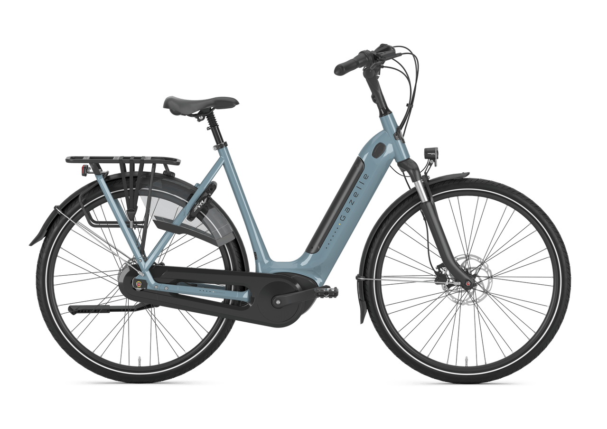
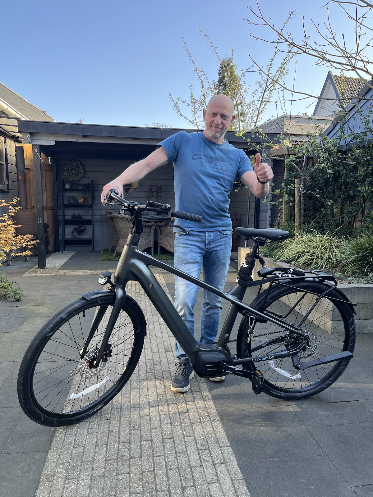
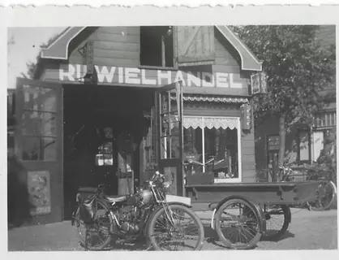
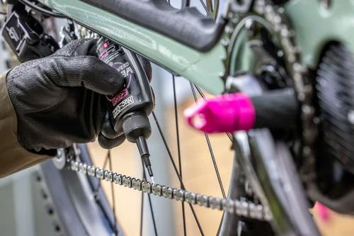
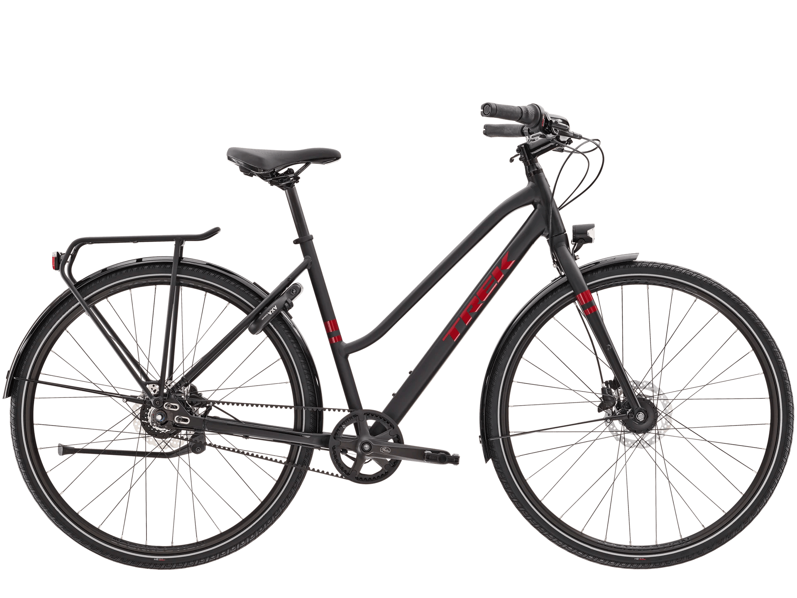
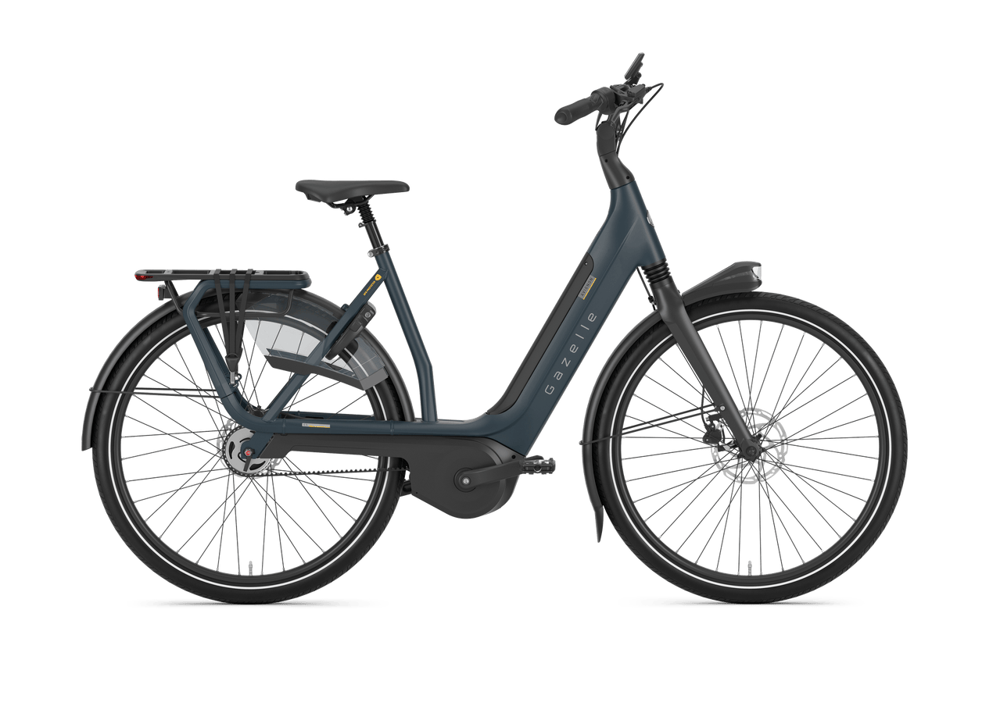
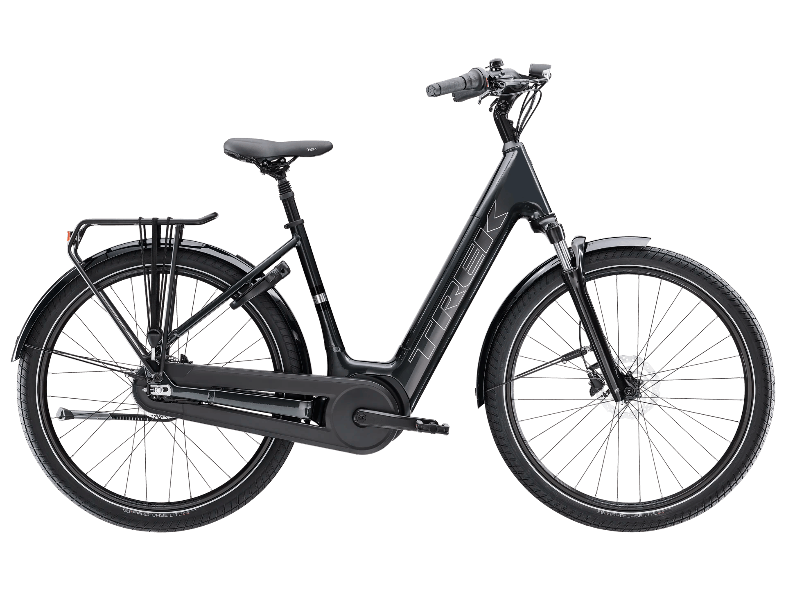
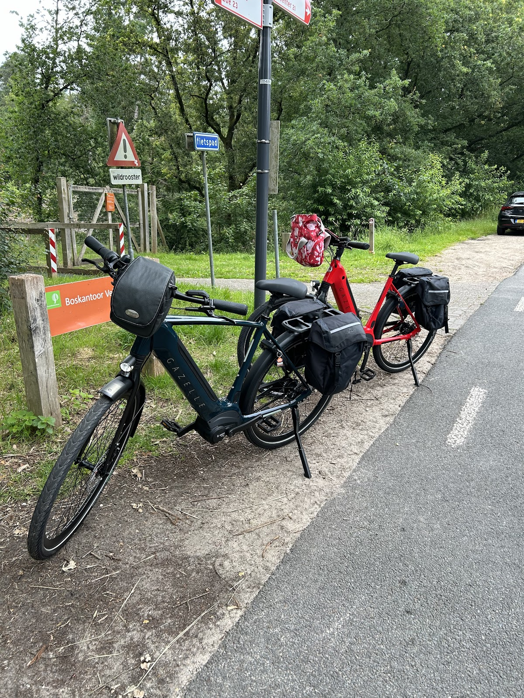

Gazelle, elektrisch
Grenoble C7+ HMB
Naar de supermarkt, een uitje naar het bos of met vrienden naar het terras in de stad. Deze allrounder kan het allemaal.
€ 3.299
Een eigen werkplaats voor reparatie en onderhoud, en een winkel vol Gazelle en Trek. Loop binnen aan de Ugchelseweg 161, of bel even of uw fiets vandaag nog kan komen.
Dinsdag en zondag gesloten. Alle openingstijden


Dealer van
In onze gemoderniseerde werkplaats helpt vakkundig personeel u verder, van een piepende rem tot een riem die opnieuw moet worden afgesteld. Maak een afspraak, of kom even langs.

Weinig remkracht, trillingen of geluid: maak een afspraak en wij halen alles uit uw remmen, zodat u weer veilig stopt.
Wij leveren Enjoy® zadels in de breedtemaat die past bij uw manier van fietsen en de afstand tussen uw zitbotjes.
Een Gates riem gaat het langst mee op de juiste spanning. Wij stellen uw riem af en geven hem een coating.
Jas aan, handschoenen aan, veters gestrikt. Maar bent u ook voorbereid op een val? Kom langs en pas een Cratoni helm.
"Mijn tubeless koersfiets had een leegloper. Ik viel onverwachts binnen en werd toch vriendelijk geholpen met een tangetje en voetpomp."
"ondanks dat het nog voor openingstijd was mocht ik even de speciale moersleutel lenen om het aan te draaien. Echt top en vriendelijk!"
Een greep uit ons populaire aanbod. Liever eerst advies over een e-bike? Maak gerust een afspraak, dan zoeken we samen.

Gazelle, elektrisch
Naar de supermarkt, een uitje naar het bos of met vrienden naar het terras in de stad. Deze allrounder kan het allemaal.
€ 3.299

Trek, stadsfiets, in de uitverkoop
Een hippe, stijlvolle stadsfiets, gemaakt om lekker te toeren en naar uw werk te fietsen.
€ 1.249 € 1.399

Gazelle, elektrisch
Comfort en kracht in één: u zit rechtop en ontspannen, met krachtige ondersteuning als het nodig is.
€ 4.399

Trek, elektrisch
Comfortabel en betrouwbaar. Hiermee gaat u snel en relaxed door de stad.
€ 3.399
1936
In 1936 werd ons bedrijf opgericht. Sindsdien helpen meerdere generaties Bessels u met het onderhoud van uw fiets en met de keuze voor een nieuwe.
Zoekt u een fiets om de Veluwe mee te trotseren? Wandel binnen en bekijk de nieuwste modellen, of maak een afspraak, dan nemen we er rustig de tijd voor. Misschien rijdt u straks op een mooie Gazelle of Trek.
"Een bedrijf waar ze de klant kennen en waar je altijd welkom bent."

4,6
van 5 sterren
uit 54 Google-reviews
"Vandaag heb ik de beste jongens bezocht. Bij een andere fietsenmaker werd ik helaas onvriendelijk en nonchalant behandeld, en er werd zonder goed onderzoek een prijs van ongeveer €250 voorgesteld voor de reparatie van het achterwiel, met een lange wachttijd als gevolg. Gelukkig werd ik bij Bessels warm en eerlijk behan…"
"Vorige week mijn TREK 29 inch Mountainbike X-Caliber 9 opgehaald nadat ik bericht kreeg dat hij klaar stond. Super snelle service en perfect geholpen. Afgelopen weekend goed mijn fiets kunnen testen en super tevreden met mijn aankoop, bedankt namens een tevreden klant!"
"Mijn tubeless koersfiets had een leegloper. Ik viel onverwachts binnen en werd toch vriendelijk geholpen met een tangetje en voetpomp. Per ongeluk verkeerde doek gebruikt maar iedereen bleef vriendelijk en behulpzaam. Top als je elkaar zo kan helpen"
"onderweg woon werk verkeer (zutphen-apeldoorn) is er iets tussen de ketting van mijn stromer gekomen waardoor de cassette moer los was gekomen. ondanks dat het nog voor openingstijd was mocht ik even de speciale moersleutel lenen om het aan te draaien. Echt top en vriendelijk!"
"Voor de tweede keer een nieuwe fiets gekocht bij Bessels. Een bedrijf waar ze de klant kennen en waar je altijd welkom bent."
| Maandag | 09:00 tot 12:30 13:30 tot 17:00 |
| Dinsdag | Gesloten |
| Woensdag | 09:00 tot 17:30 |
| Donderdag | 09:00 tot 17:30 |
| Vrijdag | 09:00 tot 17:30 |
| Zaterdag | 09:00 tot 12:00 13:00 tot 15:00 |
| Zondag | Gesloten |
Laat weten wat er met uw fiets is, of waar u naar zoekt. We nemen zo snel mogelijk contact op.